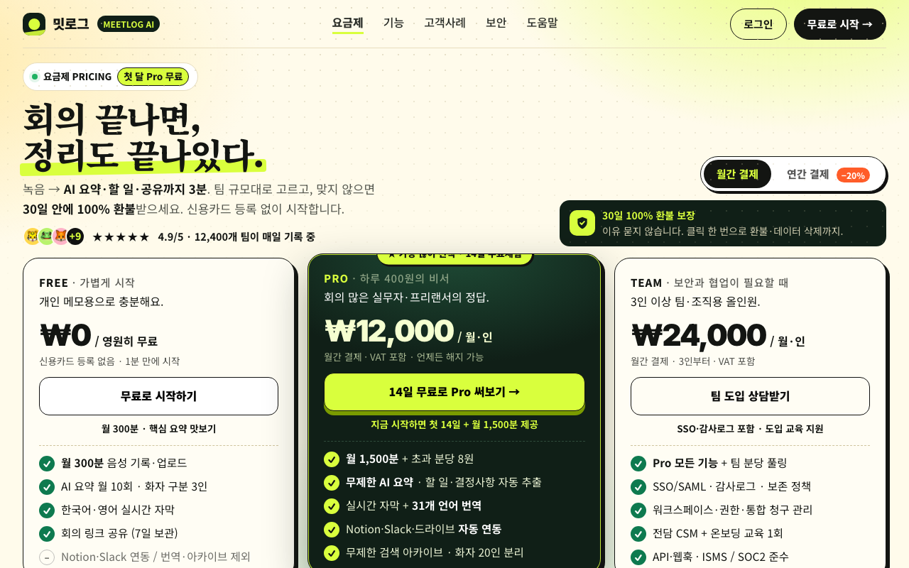

| issue | opened | resolved | attempts | tried |
|---|---|---|---|---|
| 물체 형태(LO)·움직임(MT) 반응이 낮음: 뚜렷한 사물 실루엣이 없는 텍스트 위주 화면 | r0 | open | 3 | r2: 우측 dominant 브라우저 디바이스 실루엣+라임 사선 모션 스트라이프+요약완료 플로팅 뱃지 추가 / r3: 브라우저 프레임 대신 원형 AI 레코더 puck 실루엣+모션 잔상+사선 스트라이프 빔을 Pro카드 뒤 dominant 요소로 신설 |
| 장소 영역(PPA)이 우세: 배경 풍경이 화면을 지배해 내용이 묻힘 | r0 | open | 3 | r2: 그라데이션·도트 배경 제거 후 플랫 크림 단일색, 카피를 솔리드 화이트 패널에 격리 / r3: 그라데이션·도트 배경 전면 제거 후 플랫 크림 단일색, 히어로 카피를 솔리드 화이트 패널에 격리 |
| 보상 회로(OFC/vmPFC)는 켜졌는데 끌림 헤드는 평범: 가치 신호가 있지만 무엇이 좋은지 읽히지 않음 | r0 | open | 3 | r2: 히어로 시선 위치에 단일 베네핏+가격/오퍼 라인(Pro 월12,000원·14일 무료) 명시 |
| r | ui | 뇌 | 심사위원 | kept | changes | sourced photos |
|---|---|---|---|---|---|---|
| r0 | 0.624 | 0.480 | 0.78 | ✓ | ||
| r1 | 0.559 | 0.372 | 0.72 | · | Pro카드 뒤 사선 모션패널 + 우측 dominant 디바이스 실루엣(브라우저프레임·파형·요약완료 뱃지) 추가; 배경 그라데이션·도트 제거 후 플랫 크림으로 단순화, 카피를 솔리드 화이트 패널에 격리; 히어로 시선 위치에 단일 가치+가격 라인(1시간→3분 요약 Pro 월12,000원 첫달무료) 추가, 경쟁 오퍼 제거 | |
| r2 | 0.558 | 0.415 | 0.69 | · | 우측 dominant 브라우저 디바이스 실루엣+라임 사선 모션 스트라이프+요약완료 플로팅 뱃지 추가; 그라데이션·도트 배경 제거 후 플랫 크림 단일색, 카피를 솔리드 화이트 패널에 격리; 히어로 시선 위치에 단일 베네핏+가격/오퍼 라인(Pro 월12,000원·14일 무료) 명시 | |
| r3 | 0.591 | 0.427 | 0.75 | · | 브라우저 프레임 대신 원형 AI 레코더 puck 실루엣+모션 잔상+사선 스트라이프 빔을 Pro카드 뒤 dominant 요소로 신설; 그라데이션·도트 배경 전면 제거 후 플랫 크림 단일색, 히어로 카피를 솔리드 화이트 패널에 격리; 히어로-요금제 사이에 단일 베네핏+가격 오퍼바(3분요약·월12,000원·14일무료) 신설, 아이브로우 오퍼문구 제거로 경쟁요소 제거 |